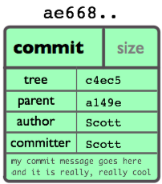
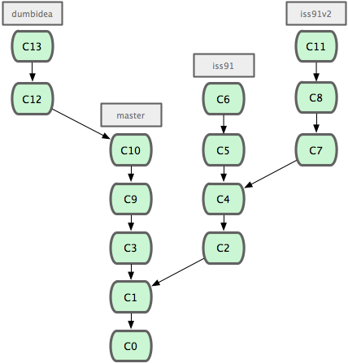

Version Control with Git and GitHub
Victor Costan
Contents
- Introduction
- Git Repositories
- Development Workflow
- Branches
- Collaboration Workflow
- Wrap-Up
Introduction
Your Instructors
- Victor Costan
Version Control
proposal v2 good revised NEW 11-15-06.docRevision control, also known as version control or source control […], is the management of changes to documents, programs, and other information stored as computer files.
Version Control
proposal v2 good revised NEW 11-15-06.docBy the way, this is NOT the right way to do it.
Why Use Version Control
- Collaborate without painful coordination.
- Merge two people’s changes on the same file.
- Keep track of what your teammates are doing.
- Backup your code.
- Quickly roll back bad changes.
- Documentation for your code.
- Contribute to open-source projects.
Why Not Use Version Control?
StackOverflow: Good excuses NOT to use Version Control
- A delightful mix of laziness and incompetence.
- The sense of danger gives my programming an edge.
- My code is buggy, unstructured, and unreadable. It’s simply not worth trying to keep.
- Management will understand if my project slips by six months because I accidentally deleted something I shouldn’t. They do it all the time.
- If I delete my 5000 line source file by mistake, chances are the total rewrite may be better than the original. Eventually.
- You hate your company and want to see them fail.
Why Use Git
- It is awesome.
- Cheap branches (you’ll learn about them today).
- Many open-source projects are on Git.
- GitHub
Git Repositories
Don’t worry if it doesn’t make sense right away! It’s awesome if it does,
though!
Objects
- Everything is an object.
- Objects never change after they are created. (immutable)
- An object has
- type: blob (file), tree (directory), commit (revision), tag
- size
- contents
- Objects are named by SHA-1 hashes of contents
- Full names are long and ugly:
435fcb11778c090e6b686d71361ecf30809694e6 - Short names:
435fc(any prefix, as long as it’s unique) - No duplicates!
- Full names are long and ugly:
Blobs

Trees

Commits

Trees vs Commits
- Top-level tree – snapshot of all files and dirs in projects.
- Commit = version. Tree + metadata.
- Who produced the tree. (author)
- Author’s explanation of what is changed in the new version. (message)
- Commits the author used to produce this commit. (parents)
Trees vs Commits

Tags

Trees vs Commits vs Tags
- Top-level tree = snapshot of all files and dirs in projects.
- Commit = version. Tree + metadata.
- Who produced the tree. (author)
- Author’s explanation of what the version means. (message)
- Tag = release. Commit + more metadata.
- Tag’s author (e.g., project’s release manager)
- Author’s explanation of release. (message)
Simplified View
- Commit = version.
- Commit parents = versions immediately before this version.
- Commits form a directed acyclic graph (DAG).
Demo I: Repository Structure
git gui- select
Repository>Visualize all branch history
Demo II: Commits as Documentation
History
- Commits
- Big problem broken down in small steps.
- Almost as good as a live demo, if commits are small.
Commit
- Commit: follow / unfollow in newsfeed.
- All the changes related to a feature.
- Shows how files are related to each other.
Development Workflow
Git has many ways to achieve a result. I teach the workflow that I use.
“In the Zone” Workflow
- Create project dir
- Create repository
- Code a feature
- Commit the feature
- Go to step 3
“In the Zone” Workflow
- Create project dir
mkdir projectcd project
- Create repository
git init
- Code a feature
- magic
- Commit the feature
- Go to step 3
“In the Zone” Workflow
- Create project dir
- Create repository
- Code a feature
- Commit the feature
git add .git statusgit add -u .git statusgit commit -m "Initial homepage."
- Back to step 3.
Git Has 3 Worlds

Git Has 3 Worlds
- The repository
- All the versions of your project
- The working copy
- The version in the filesystem
- Other programs (e.g. your text editor) can only see this one
- The staging area (a.k.a. the index)
- A commit “under construction”
- Committing: staging area → new commit
- Staging: working copy → staging area
File Lifecycle

Paranoid Committing
- Stage all changes except for deletion
git add .
- Show me what’s about to happen
git status
- Stage modified and deleted files
git add -u .
- Make the commit
git commit -m "Initial homepage."
Faster Committing
- Stage all changes
git add -A .
- Show me what’s about to happen
git status
- Make the commit
git commit -m "Initial homepage."
Fastest Committing
- Only needed if you added new file
git add .
- Stage updates, make the commit
git commit -a -m "Initial homepage."
“Out of the Zone” Workflow
- Commits = documentation.
- Must be able to fix commit errors.
What did I do recently?
git log- Shows recent commits
Shouldn’t Have Committed That
git reset HEAD^- Undoes your last
git commit - The commit contents is available in the working tree
Oh man, I shouldn’t have committed that, or that, or that!
git reset HEAD^^^does 3 commitsgit reset HEAD~3also does 3 commits
Shouldn’t Have Added That
I think I want this file in a different commit.
git reset HEAD -- fileunstages an updategit rm --cached fileunstages a newly added file
Gone Overboard on Commits
Those last two commits really are the same feature.
git rebase -i HEAD^^- Rebasing is the easiest way to screw up your repository
- Rebasing is also the most powerful tool for history rewriting
Branches
A set of files under version control may be branched or forked at a point in time so that, from that time forward, two copies of those files may develop at different speeds or in different ways independently of each other.
Git Commits vs Trees
Git Branches vs Commits, Trees

Git Branches
A branch is a named pointer to a commit.
Branches have
- a name, e.g.
master - a commit name, e.g.
7b3087613bee8487e11e9d8f832b70e2b025f3a1
Git Branch Lifecycle

Git Branch Lifecycle

HEAD: Which Branch Am I Working On?
HEAD
HEADis the name of the branch that you’re working on.- Now you have a complete understanding of the Git object model!
Git Object Model

Branch Discipline
There is no single solution. I like this one.
Integration vs feature branches
- Integration branches “collect” topic branches
- No commits on integration branches
- A feature branches off an integration branch
- Feature branches are merged back into integration branches
- No merging into integration branches
Branch Discipline
Two special integration branches for Web development.
master, a.k.a. mainline: all features are branched off and merged into itprodis what’s running on production
Branching Workflow
- Create a feature branch
- Work on the feature
- A horrible bug shows up in prod, drop everything you’re doing
- Fix the bug
- Finish the feature
- Merge the feature branch
Creating a Feature Branch
- Create a feature branch
git checkout -b awesomeness
- Work on the feature
- magic +
git commit -m "Awesome footer."
- magic +
- A horrible bug shows up in prod, drop everything you’re doing
git commit -a -m "Saving work, must fix bug."
Stop and Fix the Bug
- Get back on
master, must branch off of itgit checkout master
- Create bug branch
git checkout -b bugfix
- Develop the bugfix
- magic +
git commit -m "Fixed bug. Whew."
- magic +
- Merge the bugfix into
master - Delete the bugfix branch
Stop and Fix the Bug
- Get back on
master, must branch off of it - Create bug branch
- Develop the bugfix
- Merge the bugfix into
mastergit checkout mastergit merge bugfix
- Delete the bugfix branch
git branch -d bugfix
Finish the Feature
- Get bach to feature branch
- Do more developing
- Merge the feature into
master - Delete the feature branch
Can you write down the commands before seeing the next slide?
Finish the Feature
- Get back to feature branch
git checkout awesomeness
- Do more developing
- magic +
git commit -m "Prepare for awesomeness."
- magic +
- Merge the feature into
mastergit checkout mastergit merge awesomeness
- Delete the feature branch
git branch -d awesomeness
Collaboration Workflow
Centralized Version Control
- Central server stores authoritative repository
- Pro: linear history that everyone agrees on
- Pro: revision numbers are short, sequential numbers → can be used for versioning
- Con: server down → can’t collaborate
- Examples: Subversion (SVN), CVS, Perforce
Distributed Version Control
- Everyone has a repository replica
- Examples: Git, Mercurial (hg), DARCS
- Pro: no single point of failure
- Pro: can work without Internet access
- Con: history isn’t linear
- Con: revision numbers are long monstruosities
Git is Distributed
- Everyone has a repository replica
- The replicas that you talk to are named
remotes - The main “remote” is named
origin
Managing Remote Repositories
- Link up to a GitHub repository
git remote add origin git@github.com:pwnall/6470_lecture.git
- Look at all the remotes
git remote
- Remove a link
git remote rm origin
Remote Repositories
2 ways to create a repository
git init- Used this one before
git clone git@github.com:pwnall/6470_lecture.git- Copies a remote repository
- Links the remote as
origin
Exchanging Data with a Remote Repository
- Repositories exchange branches.
- Branches take the rest of the object graph with them.
Exchanging Data with a Remote Repository
- Repositories exchange branches.
- Branches take the rest of the object graph with them.
- Send commits on all your local branches to a remote
git push, which is a shortcut forgit push origin
- Sends commits on one of your local branches to a remote
git push origin master- You need this command if the branch doesn’t exist on the remote
Sidenote: GitHub Wants SSH Keys
- Go to help.github.com
- Click on the Generating SSH Keys link
Exchanging Data with a Remote Repository
- Repositories exchange branches.
- Branches take the rest of the object graph with them.
- Receive commits from a remote branch to your branch
git pull origin master
- Receive commits from the remote branch matching your local branch
git pull origin
Exchanging Data with a Remote Repository
- Repositories exchange branches.
- Branches take the rest of the object graph with them.
Creating a local copy of a remote branch (new git)
git checkout bugfix
Creating a local copy of a remote branch (old git)
git checkout origin/bugfixgit checkout -b bugfix
Exchanging Data with a Remote Repository
- Repositories exchange branches.
- Branches take the rest of the object graph with them.
Every branch in a remote repository is available as
remote-name/branch-nameExchanging Data with a Remote Repository
- Repositories exchange branches.
- Branches take the rest of the object graph with them.
Every branch in a remote repository is available as
remote-name/branch-namegit pull origin master is actually
git fetch origingets all branches in theoriginremotegit merge origin/master
Github
Github is awesome.
- Code review
- Pull requests
- Open-Source projects
- Ruby on Rails
- Android
- Many more things that make life easy
Github
If you want a private Github repository
- Have all your team members make Github accounts
- Send one e-mail to 6.470-staff@mit.edu with all your team members’ Github usernames
Wrap-Up
Contact Information
Victor Costan
- Web: www.costan.us
- E-mail: victor@costan.us
- Facebook: pwnall
- Twitter: pwnall
Presentation Resources
Slides and Code
- Source code: http://github.com/costan/git_slides/
- Git documentation collection: http://git-scm.com/documentation
- Git community book: http://book.git-scm.com/
- Pro Git book: http://progit.org/book/
- GitHub: http://github.com
- Pull requests (patches) are welcome!